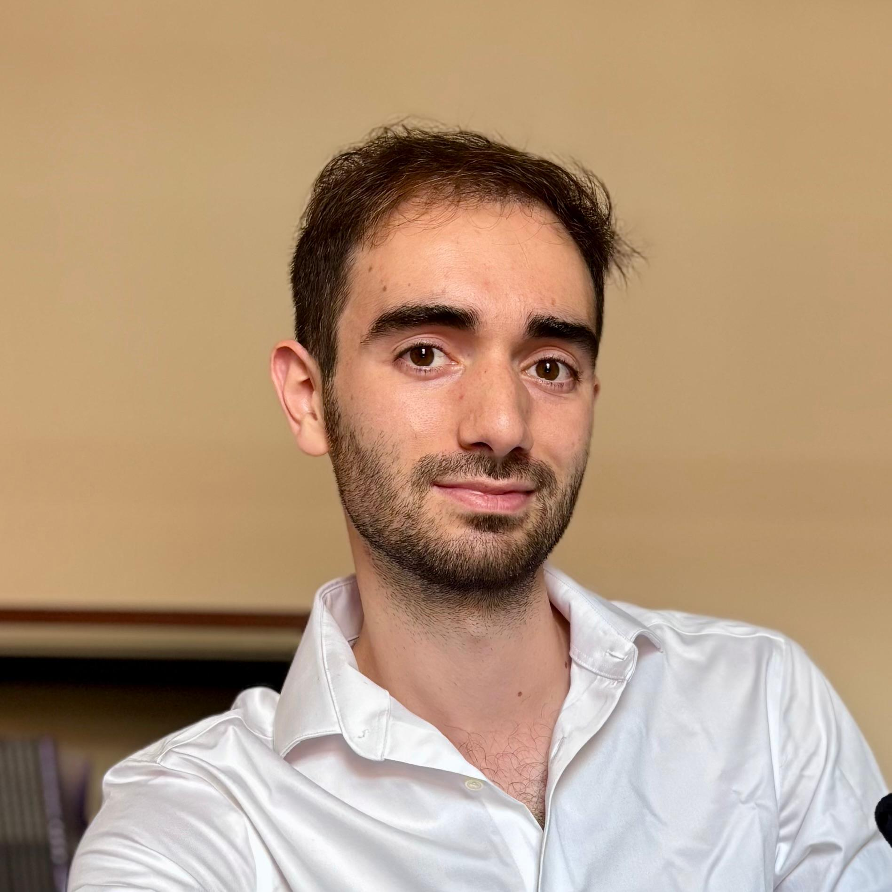

About me
Hi, I am Gimmy. I am a physicist and theoretical astrophysicist.
I am a postdoctoral member at the Institute for Advanced Study in Princeton, and also a recipient of the Rubicon Fellowship. I completed my PhD in 2024 at the University of Amsterdam.
My research interests span black holes, dark matter, gravitational-wave astronomy, stellar dynamics, and ultralight fields. In particular, I often study binary-environment interactions in various contexts, as a tool to discover new astrophysics or fundamental physics. For example:
- gravitational-wave signatures of black hole superradiance in binary inspirals [1, 2, 3, 4, 5, 6];
- a general theory of stochastic perturbations of binaries, with applications to dark matter, interstellar medium, and more [7];
- CoM motion, precession, and evolution of supermassive black hole binaries during stellar hardening [8];
- S-star dynamics around the supermassive black hole in the Galactic Center [9, 10];
- black hole binaries interaction with ultralight dark matter [11];
- a semi-analytic model of tidal disruption events [12, 13].
You can check out all my publications on InSpire, Google Scholar, NASA ADS, or on the Research page of this website.
Apart from research, I spend a lot of time and energy organizing the Physics Olympiads in Italy, for which I create, review and select new problems, coordinating the whole process for the team competition. I'm also particularly enthusiastic about teaching and lecturing.
Other subjects and activities I am passionate about include: space exploration, evolutionary biology, Pokémon videogames, running, and various sports. I also love hiking and exploring wild locations: my favorite ones so far have been the Big Island of Hawaiʻi, and Kangaroo Island in South Australia.
Short CV
| 2024-present | Member, Institute for Advanced Study, Princeton |
| 2020-2024 | PhD, University of Amsterdam |
| 2015-2020 | Diploma, Scuola Normale Superiore |
| 2018-2020 | Master's degree, University of Pisa |
| 2015-2018 | Bachelor's degree, University of Pisa |
Contact
| tomaselli@ias.edu | |
| Address | Office: 225 Bloomberg Hall, 1 Einstein Drive, Princeton, NJ 08540 (USA) |